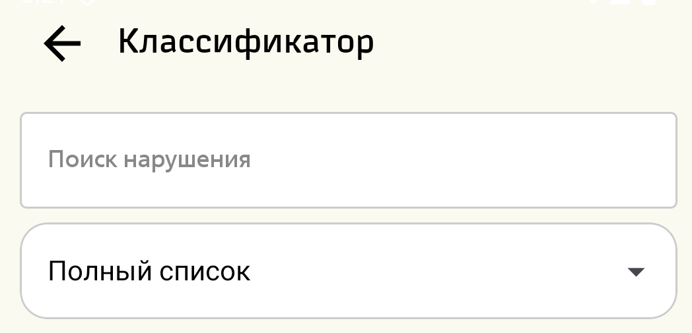
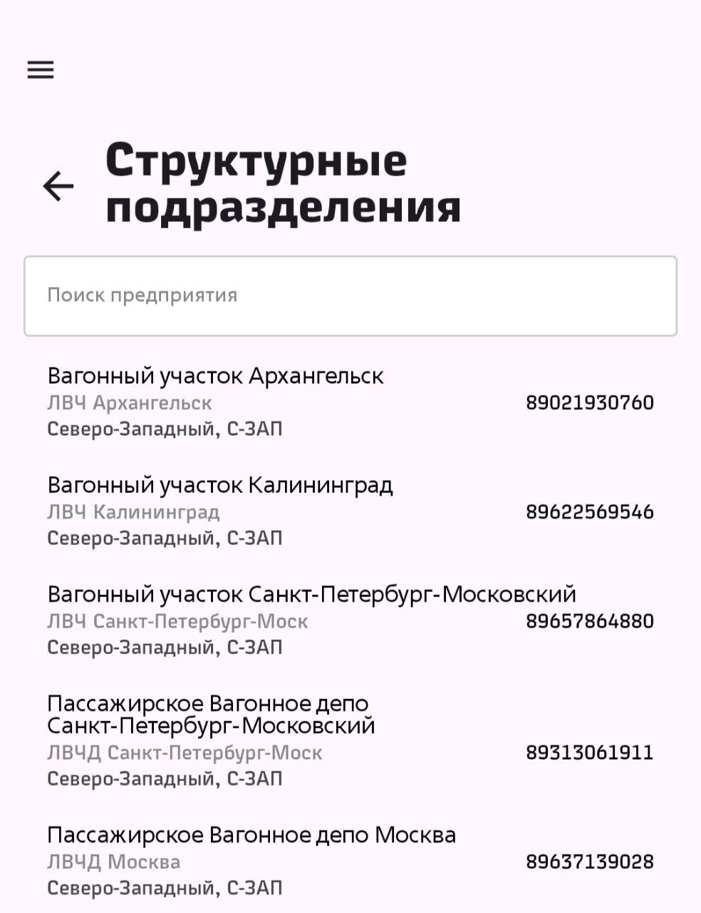
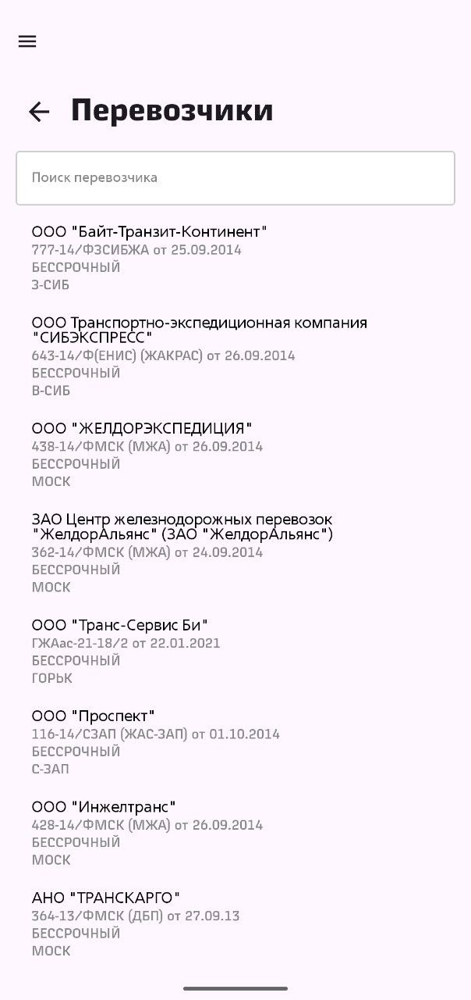

Данный раздел предназначен для просмотра действующих пунктов классификатора в зависимости от типа проверки, действующих договоров с перевозчиками, а также структурных подразделений АО "ФПК
При первичном открытии данного экрана появляется перечень контроллируемых параметров.
Для смены типа справочника необходимо использовать кнопку "Меню", расположенную в левой верхней части экрана.
При нажатии на данную кнопку открвается боковое меню с перечнем справочников.
В данном пункте меню поиск осуществляется как по содержимому пункта, так и по непосредственно номеру пункта классификатора. При переключении между типами проверки с помощью выпадаемого меню - список автоматически фильтруется.
Для поиска неоходимо начать ввод в верхнем текстовом поле.
Поиск осуществляется как по содержимому пункта, так и по непосредственно номеру пункта классификатора. При переключении между типами проверки с помощью выпадаемого меню - список автоматически фильтруется.
В данном разделе представлен список структурных подразделений АО "ФПК" с указанием причастных филиалов и номеров телефонов диспетчеров. Первой строкой указано полное наименование предприятия, ниже указано сокращенное наименование, в самом конце указан причастный филиал. В правой части строки структурного подразделения указн номер телефона диспетчера. Номер можно скопировать путем нажатия на него.
Поиск структурного подразделения осуществляется путем ввода искомого значения в текстовом поле. Поиск ведется по полному наименованию структурного подразделения.
В данном разделе представлен список арендаторов/собственников почтовых и багажных вагонов. В первой строке указано название компании, ниже указываются данные действующего договора, срок действия договора и филиал-держатель договора
Поиск компании осуществляется путем ввода значения в текстовое поле, поиск ведется по наименованию компании. Для выхода из меню следует нажать кнопку "Назад", расположенную в левом верхнем углу экрана (или системную кнопку "Назад")
Назад Наверх